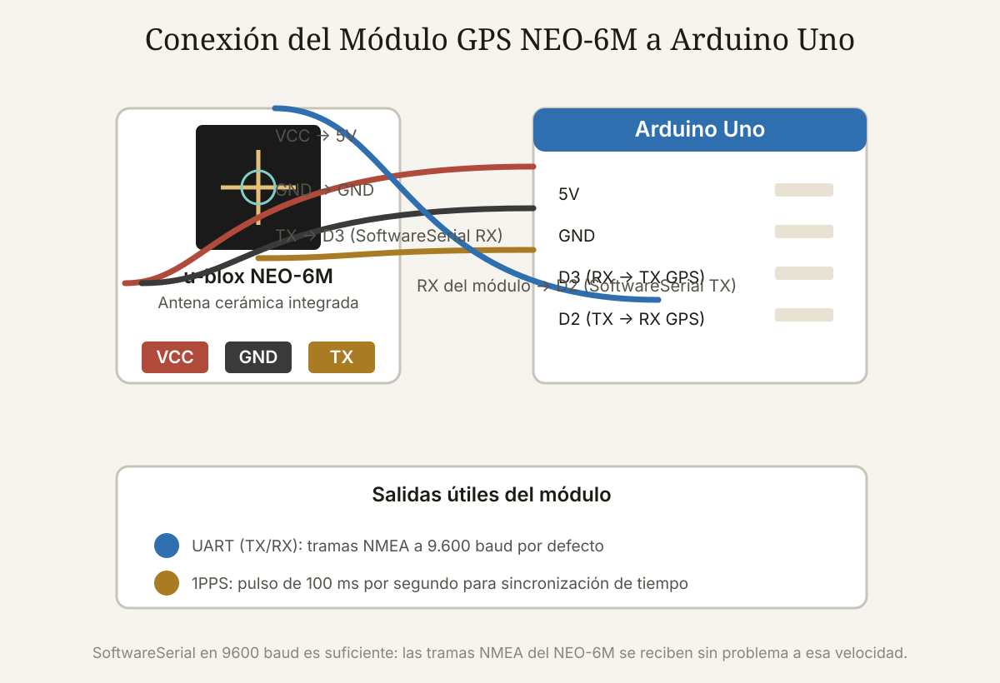

Qué cubre esta guía
- Qué es el GPS y qué hace el NEO-6M
- Especificaciones del NEO-6M
- Conexión de hardware
- Primer código: tramas NMEA en bruto
- Parsear con TinyGPS++: GGA y RMC
- Mostrar la posición en una pantalla OLED
- Seguimiento en la nube con ThingSpeak
- Recepción: interiores, fijación en frío y antena
- NEO-6M vs. NEO-8M vs. NEO-M9N
- Problemas comunes y soluciones
- Conclusión
- Preguntas frecuentes
Qué es el GPS y qué hace el NEO-6M
El GPS (Global Positioning System) es una constelación de satélites estadounidenses que transmiten continuamente su posición y hora exacta. Un receptor como el u-blox NEO-6M escucha esas transmisiones, calcula la distancia a varios satélites (trilateración) y resuelve su propia posición, velocidad y hora. Con 4 o más satélites visibles, el receptor entrega latitud, longitud, altitud y hora UTC con una precisión típica de 2,5 metros.
El NEO-6M es el módulo GPS más usado en proyectos maker por tres razones: es barato (3–8 USD), simple de conectar (UART, 4 pines) y muy documentado. Aunque u-blox lo marcó como diseño heredado, sigue vendiéndose por millones en módulos con antena cerámica integrada, y sus sucesores mantienen el mismo cableado y protocolo.
Especificaciones del NEO-6M
| Parámetro | Valor |
|---|---|
| Receptor | u-blox 6, 50 canales |
| Precisión de posición | 2,5 m CEP |
| Sensibilidad de seguimiento | −161 dBm |
| Sensibilidad de adquisición (frío) | −148 dBm |
| Primera fijación en frío | 27 s (típico) |
| Primera fijación en caliente | 1 s |
| Protocolo | NMEA 0183, UBX (9600 baud por defecto) |
| Alimentación | 2,7–3,6 V (los módulos traen regulador a 3,3 V) |
| Respaldo | RTC y memoria RAM con batería (pila de botón en los módulos) |
El dato que más frustra a los principiantes es el de primera fijación en frío: si el módulo no tiene almanaque ni efemérides (receptor apagado hace días o sin batería de respaldo), tardará entre 27 segundos y varios minutos en fijar por primera vez, y necesita cielo despejado. Dentro de una casa, con techo y muros de hormigón, es habitual que no fije nunca — no es un módulo defectuoso, es física de las señales de 1.575 MHz.
Conexión de hardware
La mayoría de los módulos NEO-6M comerciales traen un regulador de 3,3 V integrado, por lo que se alimentan con 5V del Arduino y se comunican por UART con niveles TTL:
- VCC → 5V del Arduino.
- GND → GND (tierra común).
- TX del módulo → D3 del Arduino (entrada RX del SoftwareSerial).
- RX del módulo → D2 (salida TX del SoftwareSerial).
El módulo además suele tener una antena cerámica en la placa (el cuadradito metálico) y a veces un conector u.FL para antena externa. Si la placa trae pines PPS y 3.3V: el PPS (pulso por segundo) sirve para sincronización de tiempo y el 3.3V es salida del regulador (no lo uses para alimentar otros circuitos).
Primer código: tramas NMEA en bruto
Antes de parsear nada, verifica que el módulo habla. Este sketch imprime en el Monitor Serie las tramas NMEA tal cual llegan:
#include <SoftwareSerial.h>
SoftwareSerial gps(3, 2); // RX, TX
void setup() {
Serial.begin(115200);
gps.begin(9600);
Serial.println("Esperando tramas NMEA...");
}
void loop() {
while (gps.available()) {
char c = gps.read();
Serial.write(c);
}
}Con el módulo junto a una ventana o al aire libre deberías ver líneas como:
$GPGGA,195208.000,3326.7891,S,07037.5672,W,1,07,1.2,584.2,M,-2.3,M,,*5A
$GPRMC,195208.000,A,3326.7891,S,07037.5672,W,0.02,45.67,150826,,,D*7BDos sentencias bastan para el 90 % de los proyectos:
- GGA: posición (lat/lon en grados y minutos), calidad del fix, número de satélites, altitud.
- RMC: la "recomendada mínima": posición, velocidad en nudos, rumbo, fecha y hora UTC, y el campo A/V (A = fix válido, V = sin fix).
Parsear con TinyGPS++: GGA y RMC
Parsear NMEA a mano es tedioso y propenso a errores; la librería TinyGPS++ (de Mikal Hart) lo hace por ti. Se instala desde el Gestor de Librerías del IDE:
#include <SoftwareSerial.h>
#include <TinyGPSPlus.h>
SoftwareSerial gps(3, 2);
TinyGPSPlus gpsPlus;
void setup() {
Serial.begin(115200);
gps.begin(9600);
}
void loop() {
while (gps.available()) {
gpsPlus.encode(gps.read());
}
if (gpsPlus.location.isUpdated()) {
Serial.print("Lat: "); Serial.print(gpsPlus.location.lat(), 6);
Serial.print(" Lon: "); Serial.print(gpsPlus.location.lng(), 6);
Serial.print(" Sat: "); Serial.println(gpsPlus.satellites.value());
}
}Campos útiles de TinyGPS++:
location.lat() / location.lng()— latitud y longitud en grados decimales.altitude.meters()— altitud sobre el nivel del mar.speed.kmph()— velocidad en km/h (derivada del campo de nudos).course.deg()— rumbo en grados.time.hour()/minute()/second()— hora UTC (suma tu offset para hora local).satellites.value()— satélites en uso.location.isValid()— distingue fix real de datos sin validar.
Mostrar la posición en una pantalla OLED
Con una pantalla OLED 0,96" I2C (SSD1306) el módulo se convierte en un navegador de mano:
#include <SoftwareSerial.h>
#include <TinyGPSPlus.h>
#include <Wire.h>
#include <Adafruit_SSD1306.h>
#define ANCHO 128
#define ALTO 64
SoftwareSerial gps(3, 2);
TinyGPSPlus gpsPlus;
Adafruit_SSD1306 display(ANCHO, ALTO, &Wire, -1);
void setup() {
display.begin(SSD1306_SWITCHCAPVCC, 0x3C);
display.clearDisplay();
gps.begin(9600);
}
void loop() {
while (gps.available()) {
gpsPlus.encode(gps.read());
}
display.clearDisplay();
display.setTextSize(1);
display.setTextColor(SSD1306_WHITE);
display.setCursor(0, 0);
if (gpsPlus.location.isValid()) {
display.println("Lat: " + String(gpsPlus.location.lat(), 5));
display.println("Lon: " + String(gpsPlus.location.lng(), 5));
display.println("Vel: " + String(gpsPlus.speed.kmph(), 1) + " km/h");
display.println("Sat: " + String(gpsPlus.satellites.value()));
display.println("Hora UTC: " + String(gpsPlus.time.hour()) + ":" +
String(gpsPlus.time.minute()));
} else {
display.println("Buscando satelites...");
display.println("(cielo despejado)");
}
display.display();
delay(500);
}Este mismo patrón sirve para cualquier salida: una tarjeta SD que registra rutas, un módulo LoRa que transmite la posición, o un reloj que se auto-sincroniza con el GPS.
Seguimiento en la nube con ThingSpeak
Para seguimiento remoto, el patrón estándar es GPS + ESP8266/ESP32 (Wi-Fi) + ThingSpeak. El ESP32 puede recibir las tramas del NEO-6M por su UART (Serial2) y publicar latitud y longitud en el canal cada N segundos:
// Fragmento: publicación en ThingSpeak
String url = "https://api.thingspeak.com/update?api_key=TUKKEY&field1=" +
String(gpsPlus.location.lat(), 6) + "&field2=" +
String(gpsPlus.location.lng(), 6);
http.begin(url);
http.GET(); // solo cuando location.isValid()
http.end();ThingSpeak puede dibujar la posición en un mapa con su widget de Google Maps, lo que convierte el montaje en un rastreador en tiempo real visible desde cualquier navegador. La regla de oro: solo publica datos con fix válido; publicar lat/lon = 0 o posiciones fantasma contamina el gráfico y el mapa.
Recepción: interiores, fijación en frío y antena
La señal GPS es extremadamente débil (−130 dBm en el mejor caso) y no atraviesa bien edificios. Si el módulo no fija:
- Muévelo a la ventana o al exterior. Un techo de hormigón o un techo metálico bloquean casi toda la señal.
- Espera el fix en frío. La primera fijación puede tardar 1–5 minutos si el almanaque no está almacenado. Deja el módulo fijo mirando al cielo y observa la pantalla; al fijar una vez, los siguientes arranques serán mucho más rápidos (fix en caliente) gracias a la batería de respaldo.
- Orientación de la antena. La antena cerámica integrada tiene su punto ciego hacia la placa: déjala horizontal (hacia arriba), no vertical contra una pared.
- Antena externa. Si el montaje va dentro de una caja metálica o en un vehículo, usa una antena activa con conector u.FL/SMA (las de 3–5 V con amplificador interno funcionan con el pin de alimentación del módulo).
- Condensador de respaldo: algunos módulos traen un supercondensador en lugar de pila; si tu módulo pierde el almanaque cada vez que se apaga, revisa si la pila de botón está presente y cargada.
NEO-6M vs. NEO-8M vs. NEO-M9N
| Módulo | Canales | Constelaciones | Precisión | Precio orientativo |
|---|---|---|---|---|
| NEO-6M | 50 | GPS | 2,5 m | 3–8 USD |
| NEO-8M | 72 | GPS, GLONASS, BeiDou, Galileo | 2,5 m | 5–12 USD |
| NEO-M9N | 184 | GPS, GLONASS, Galileo, BeiDou, QZSS | 1,5 m | 15–30 USD |
El NEO-8M es el reemplazo natural del 6M: mismo cableado, mismo protocolo NMEA y mejor fijación en entornos difíciles por el soporte multi-constelación (con GLONASS y Galileo, más satélites visibles en ciudades con edificios). El M9N añade precisión y consumo menor, y es la opción para proyectos serios de seguimiento. Para aprender y para proyectos de bajo presupuesto, el 6M sigue siendo perfectamente funcional: la física del GPS no cambió, solo la sensibilidad del receptor.
Problemas comunes y soluciones
| Síntoma | Causa más probable | Solución |
|---|---|---|
| No llega ninguna trama al monitor serie | TX/RX invertidos o baudios incorrectos | Verifica que TX del módulo vaya al RX del SoftwareSerial (pin 3) y que sean 9600 baud |
| Llegan tramas pero location.isValid() es false | Sin fix: el módulo no ve suficientes satélites | Ventana/exterior, orientación de antena hacia arriba, espera el fix en frío |
| Lat/lon = 0 o valores absurdos | Se leen datos sin validar | Filtra con isValid()/isUpdated() antes de usar |
| Se pierde el fix al mover el montaje | Antena cerámica obstruida o señal marginal | Antena externa activa; coloca el módulo lejos del metal y del motor |
| El módulo tarda minutos en fijar cada vez | Batería de respaldo ausente o descargada | Revisa la pila de botón; deja el módulo encendido un rato para refrescar el almanaque |
| Basura en el monitor serie | SoftwareSerial inestable o interferencia | Usa Serial1/Serial2 (UART hardware) o reduce la frecuencia de impresión |
Conclusión
El NEO-6M sigue siendo la puerta de entrada perfecta al posicionamiento con Arduino: cuatro cables, una librería y en una tarde tienes latitud, longitud, velocidad y hora en pantalla. Los conceptos que aprendes — tramas NMEA, fijación en frío vs. caliente, importancia de la antena — son exactamente los mismos con cualquier receptor GPS, desde el módulo de 3 dólares hasta el de navegación agrícola.
El proyecto natural siguiente es el rastreador: GPS + ESP32 + ThingSpeak para ver tu posición en un mapa desde el celular, o GPS + tarjeta SD para registrar rutas. Y si el 6M te queda corto en ciudad, el salto al NEO-8M es directo: mismo código, misma conexión, más satélites.
Preguntas frecuentes
¿Por qué mi GPS NEO-6M no encuentra satélites dentro de la casa?
Porque la señal GPS de 1.575 MHz es muy débil y los techos y muros de hormigón la atenúan drásticamente. El receptor necesita ver al menos 4 satélites, y dentro de una casa suele ver cero. Prueba junto a una ventana con el módulo horizontal (antena hacia arriba) y espera 1–5 minutos si es la primera fijación (arranque en frío). Si el proyecto exige funcionar en interiores o en cajas metálicas, usa una antena externa activa.
¿Qué significan las tramas GGA y RMC del GPS?
Son dos sentencias del protocolo NMEA 0183. La GGA entrega la posición (latitud y longitud en grados y minutos), la calidad del fix, el número de satélites en uso y la altitud. La RMC es la 'sentencia mínima recomendada': posición, velocidad en nudos, rumbo, fecha y hora UTC, más el campo de estado A/V (A = fix válido, V = inválido). Para el 90 % de los proyectos solo necesitas estas dos, y la librería TinyGPS++ las parsea automáticamente.
¿Qué tan precisa es la posición del NEO-6M?
La precisión típica declarada por u-blox es de 2,5 metros CEP (círculo de error probable del 50 %): la mitad de las posiciones reportadas caen dentro de 2,5 m del punto real. En la práctica, con cielo despejado y buena recepción verás errores de 1 a 4 metros, que pueden subir en ciudades con reflejos de señal (multipath). Para precisión sub-métrica se necesitan sistemas diferenciales (RTK), incompatibles con el NEO-6M.
¿Puedo usar el NEO-6M con un ESP32 o una Raspberry Pi?
Sí. Con ESP32 usa el UART hardware (Serial2: RX2/TX2) o SoftwareSerial, y la misma librería TinyGPS++ que con Arduino; la ventaja es que el ESP32 puede publicar la posición por Wi-Fi directamente a ThingSpeak o MQTT. Con Raspberry Pi, conecta el módulo a los GPIO UART (ttyAMA0 o ttyS0) y usa gpsd + la librería gps-python, o lee las tramas NMEA directamente en Python. El módulo es solo un generador de tramas serie: cualquier plataforma con UART puede consumirlas.
¿Qué módulo GPS me conviene comprar en 2026: NEO-6M, NEO-8M o M9N?
Si es para aprender y el presupuesto manda, el NEO-6M (3–8 USD) sigue siendo válido y funciona igual que siempre. Para un proyecto real de seguimiento, el NEO-8M (5–12 USD) es la mejor relación: mismo cableado y código, pero con GPS+GLONASS+Galileo+BeiDou, lo que acelera la fijación y mejora la recepción urbana. El NEO-M9N (15–30 USD) se justifica si necesitas la mejor precisión y consumo mínimo. Los tres hablan NMEA 0183 a 9600 baud, así que el código de este artículo sirve para todos.
Este artículo es contenido editorial independiente: no contiene ubicaciones patrocinadas ni enlaces de afiliado. Si en futuras actualizaciones se agregan enlaces a proveedores de componentes, serán identificados explícitamente. El código y las conexiones son referenciales y deben adaptarse y probarse con tu propio hardware. Si detectas un error en esta guía, por favor avísanos.
Sigue aprendiendo
Publica la posición de tu rastreador en la nube con ThingSpeak, combínalo con sensores de movimiento en la Guía Esencial de Sensores o mide distancias con el HC-SR04.
Fuentes primarias y lecturas recomendadas
Referencias oficiales de u-blox, documentación de la librería TinyGPS++ y del protocolo NMEA. Las especificaciones corresponden a la serie NEO-6 de u-blox.
- u-blox — Hoja de datos del NEO-6
- Mikal Hart — Librería TinyGPS++ para Arduino
- Arduino Reference — Librería SoftwareSerial
- NMEA 0183 — Referencia de sentencias de navegación
- GPS.gov — Precisión del sistema GPS
- u-blox — Hoja de datos del NEO-M9N (comparativa de generaciones)
Enlaces revisados: 15 de agosto de 2026.